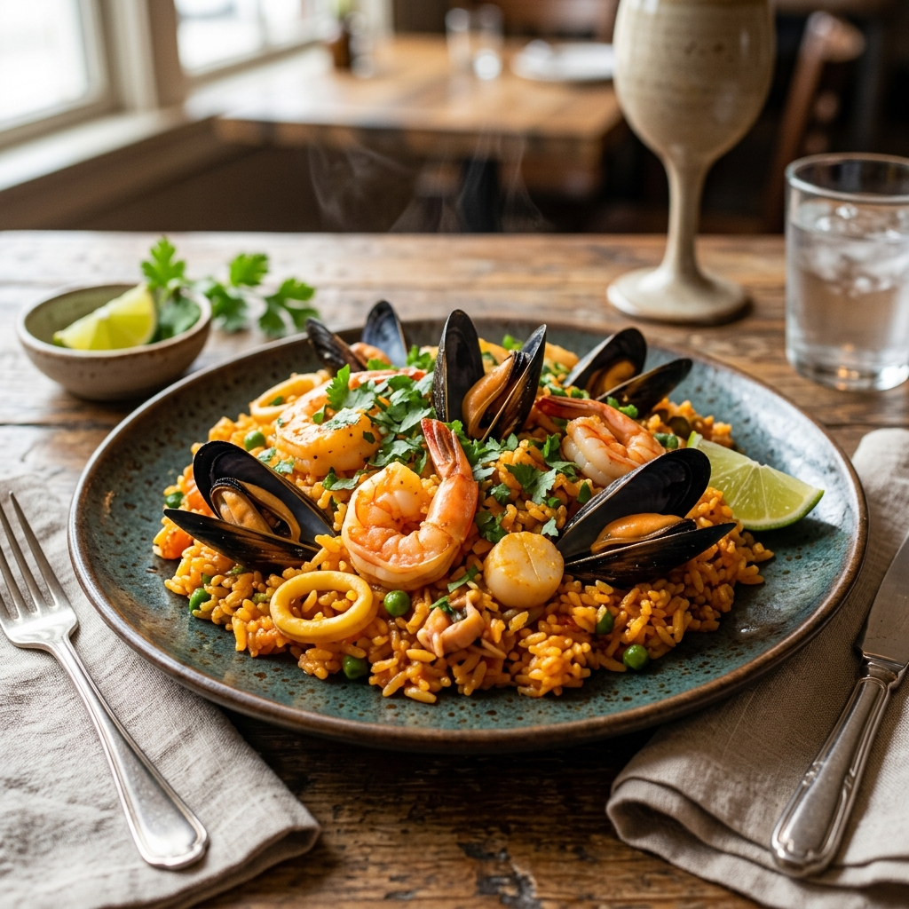

Descubre la auténtica experiencia de la cocina marina peruana. Ingredientes frescos del día, recetas tradicionales y un ambiente renovado que te cautivará.
En Mar Peruano, nuestro compromiso es la excelencia. Nos renovamos constantemente para ofrecerte pescados y mariscos de la más alta calidad, seleccionados minuciosamente cada madrugada.
Sabemos lo que buscas: frescura inigualable, el toque perfecto de ají limo y limón, y una atención que te haga sentir en casa. Ven a comprobar por qué somos el punto de encuentro favorito en San Borja.

"Me encantó. Se nota la frescura de los ingredientes. El arroz con mariscos estaba en su punto exacto. El nuevo ambiente está espectacular."
"Atención de primera y platos contundentes. El ceviche tiene ese sabor auténtico que a veces cuesta encontrar. Muy recomendado para venir en familia."
"Excelente experiencia. La relación calidad-precio es inmejorable, especialmente considerando la ubicación en San Borja."
Jr. Paseo del Bosque 533, San Borja, Lima.
Lunes a Domingo: 11:30 AM - 5:00 PM
+51 999 999 999